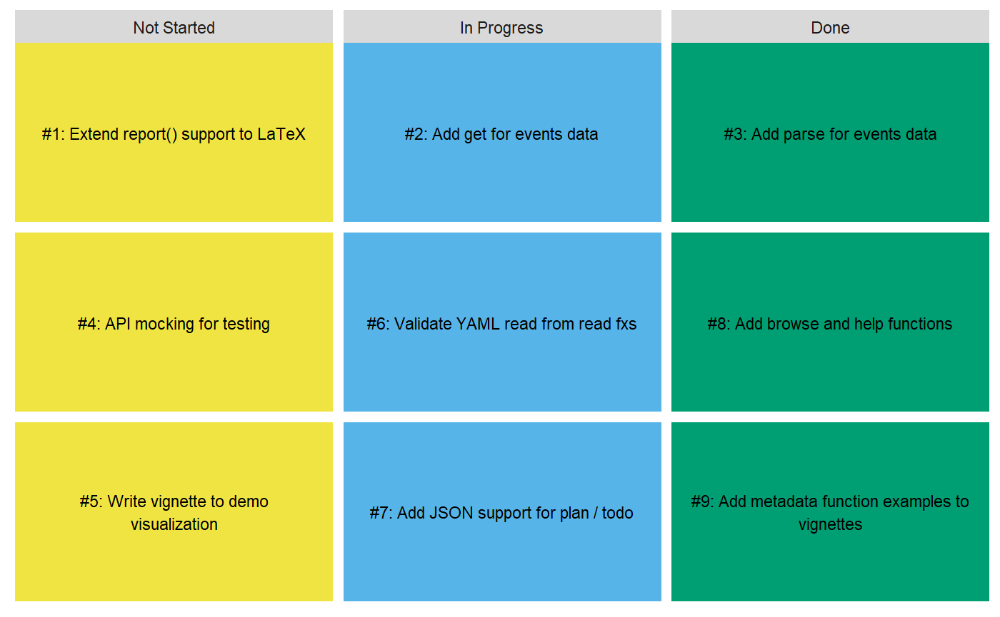

projmgr has many different ways to visualize project
status. Note that all visualization functions are currently experimental
and still have some known challenges. All feedback is welcome on these
visualizations or other desired visualizations.
Gantt Charts
For reporting on time-to-completion, viz_gantt() creates
one horizontal bar per item (e.g. issue, milestone) and colors issues by
length of time open. Items are ordered by start date, which defaults to
the data’s created_at data but can be altered via the
function’s parameters. (This is demonstrated in the Events Data
vignette.)
Items which are not yet completed are colored in grey since the true time-to-completion value is censored. Additionally, they do not have the terminal half-dot at the end of the bar.
As an example, let’s plot all of the milestones in
dplyr’s GitHub repository, as pulled on January 1,
2019.
viz_gantt(dplyr_milestones) #> Warning: Removed 4 rows containing missing values (geom_point).

Note that this plot shows some of the risks of black-box functions.
At the time of writing, the “bluesky” milestone was open on GitHub yet
has no uncompleted issues. It’s important to be precise about your
definition of done, or change the start and
end parameters to use variables most closely aligned to
your definition.
As a ggplot, standard ggplot2 features and
styling can be added to the output.
viz_gantt(dplyr_milestones) + ggplot2::labs(subtitle = 'Milestones in the dplyr repository') #> Warning: Removed 4 rows containing missing values (geom_point).

Task Boards
viz_taskboard() creates an Agile-like taskboard of items
(e.g. issues, milestones) to be started, in progress, and completed.
For example, imagine pulling issues from a hypothetical R package
into the pkg_issues dataframe.
viz_taskboard(pkg_issues, in_progress_when = is_labeled_with("in-progress"), str_wrap_width = 40)
Users specify what logic to use for identifying “in progress” items
by passing a function factory to the in_progress_when
parameter. The above example uses the is_labeled_with()
option. Other options include:
ls('package:projmgr')[grep("^is_*", ls('package:projmgr'))] #> [1] "is_assigned" "is_assigned_to" "is_created_before" #> [4] "is_due" "is_due_before" "is_in_a_milestone" #> [7] "is_in_milestone" "is_labeled" "is_labeled_with" #> [10] "is_part_closed"
See ?taskboard_helpers for more details.
As a second example, suppose we instead classify issues as in progress once they have been put in a milestone.
viz_taskboard(pkg_issues, in_progress_when = is_in_a_milestone(), str_wrap_width = 40)

Or when they were assigned to “emilyriederer”.
viz_taskboard(pkg_issues, in_progress_when = is_assigned_to("emilyriederer"), str_wrap_width = 40)

Unfortunately, this function currently suffers from spacing problems
when trying to show many items or items with very long names. Users can
corrently attempt to fix this by experimenting with the
str_wrap_width and text_size parameters or by
adjusting the fig.width and fig.height
RMarkdown options; however, in the long-term, this should be handled in
a more sustainable, automated fashion.
HTML Task Boards
As an alternative to plot-based taskboards, the
report_taskboard() function creates a taskboard built with
HTML and CSS.
report_taskboard(pkg_issues, in_progress_when = is_assigned_to("emilyriederer"))
Optional parameters of this function are include_link
(whether to link back to the relevant GitHub issue), hover
(for slightly enlarging a task on hover), and colors (to
provide a character vector of colors to override the defaults.)
report_taskboard(pkg_issues, in_progress_when = is_assigned_to("emilyriederer"), include_link = FALSE, hover = TRUE, colors = c('#ff0000', '#00ff00', '#0000ff'))
To understand the benefits of report_taskboard() over
viz_taskboard()’s reactivity, compare the results on these
two outputs as you resize your browser window.
However, note that unlike other report_ functions,
report_taskboard()’s reliance on CSS grid means this it
will generally not render elegantly within emails (as many
major providers do not fully render CSS grid.) Test this before you
include it in any emails.
Waterfall Charts
viz_waterfall() creates a waterfall plot showing, for a
fixed time-period, the initial open count, newly opened, newly closed,
and final open count of issues or milestones.
viz_waterfall(pkg_issues, start_date = '2018-11-20', end_date = '2018-12-15') #> Warning: `guides(<scale> = FALSE)` is deprecated. Please use `guides(<scale> = #> "none")` instead.